Since the last pass, main changed nothing under managym/ (git diff --stat 22ed4a733 1d7b5fde9 -- managym is empty). The branch changed three engine files: action.rs and play.rs now pass CardId where they used to convert it to ObjectId first, and zone.rs inlined two locals. A release cp313 build of HEAD was already current (cargo finished in 0.15 s). It was reinstalled atomically and extracted to /tmp/mtg320-qa3/after-x. The "before" run is the earlier run on main 22ed4a733's engine (/tmp/mtg320-qa2/before.txt). That engine and its Python package are byte-for-byte the same as main 1d7b5fde9's. Load averages were 170–295 from other work.
The same compare.py as before: 108 authored, 30 Azula, 30 TLE-bonus (Heartbeat, Lita/Zeppelin, Release to Memory, Spectral Sailor) and 400 TLA pool games. For each decision it records a hash of both seats' toJSON() and state_digest(), plus one result line per game.
games 568, decisions 137,518, finished 567, 1 PyAgentError (both engines) after.txt vs before.txt, 138,086 lines after the path header: IDENTICAL error: pool:84736ef2-v-56f0ddb0 PyAgentError: source cannot pay tap cost (same on main)
./scripts/play --port 18791 --frontend-port 18792, started in its own session. ACADEMY_PLAY_READY named this checkout's cp313 module. A headless Chromium session (Playwright from academy/ui, script deleted afterwards) opened the first visit, pressed New Game (UR Lessons vs GW Allies) and clicked random action-panel offers only, then Play Again. Three games across two browser sessions all reached Game Over: 85 clicks/142 s, 223 clicks/476 s and 26 clicks/148 s. There were no page or console errors. Game 1 showed a Compassionate Healer trigger on the stack (“When this becomes tapped: You gain 1 life. Scry 1 · triggered ability · Seat 2”). The GW Ally tokens attacked on the battlefield, and the graveyards held only cards. The server stopped on SIGINT to its process group, and both ports were freed.
The first driver run's end-of-game check matched the hidden text “game over”. I fixed the QA script, not the product, to wait for the visible Play Again button to appear and close.
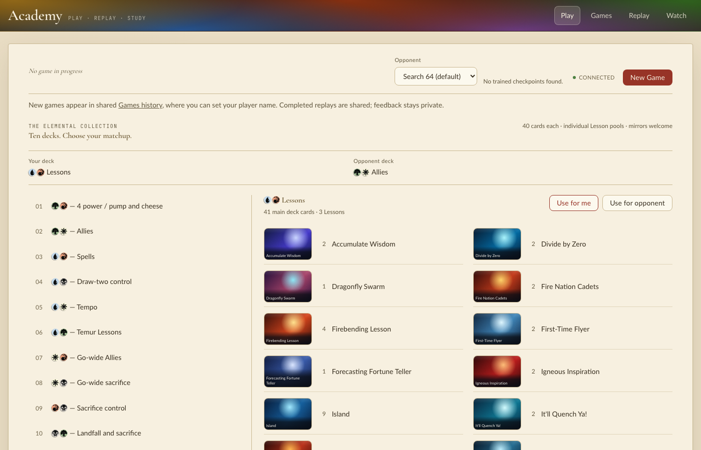
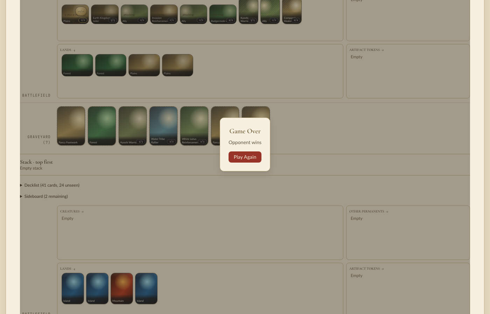
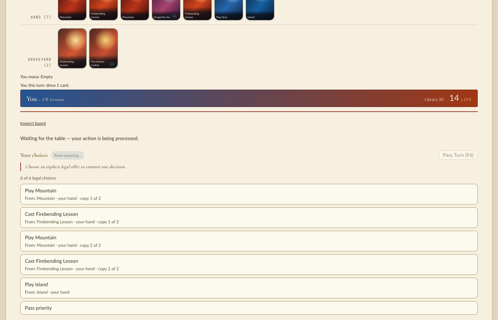
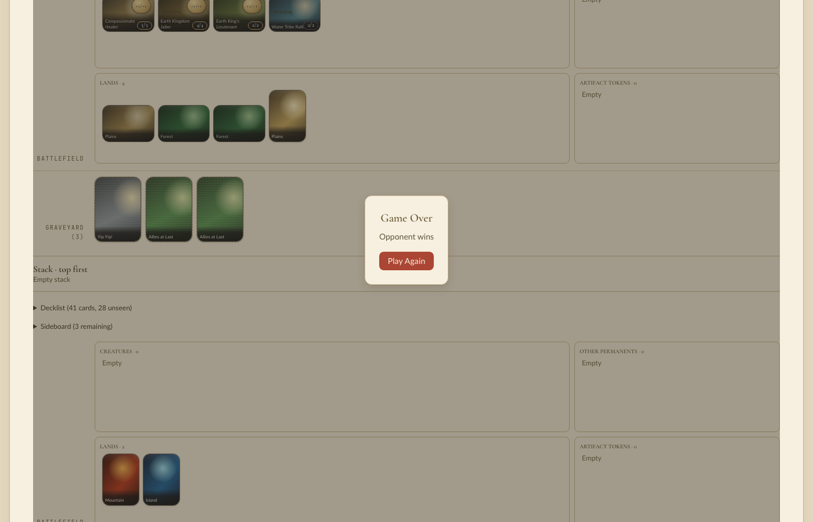
The midgame shot again shows the brief “Waiting for the table — your action is being processed” state right after a click, with “Auto-passing…” shown. That game continued and finished. No lasting stall occurred in this pass.
Works: HEAD behaves byte-for-byte like main over 568 seeded games, and Academy plays to Game Over three times.
Fixed: nothing in the product; nothing broke.
Not reached: Rust debug suite, Engine Budget and CI on this head (the gate owns them); a permanent-spell copy in Academy; emblems.
Still wrong, worst first: (1) main's “source cannot pay tap cost” agent error in one TLA pool game, which predates this change; (2) the earlier lasting Academy stall did not recur, and its cause is still unknown.
The installed extension (09:29) predated the merge, so both engines were rebuilt in release (cp313): before = main 22ed4a733 (tree equal to main 2c47f59ae, with mana-spending choices, Heartbeat of Spring and the TLE bonus sheet) in a throwaway worktree; after = this head, installed atomically into managym/. Each run printed managym.__file__. Host load averages were 120–210 (other work).
The same comparison script as below (per-decision hash of both seats' toJSON() plus state_digest(), and each result line), with one new group: 30 constructed mirrors of Heartbeat of Spring, Lita (Zeppelin token), Release to Memory (token.plain_spirit), Spectral Sailor and Lightning Bolt. A replay of those 30 games on the new engine saw Zeppelin in 30, Heartbeat on the battlefield in 29 and a Spirit in 28 (matched by name in the observation JSON).
games 568 (108 authored, 30 Azula, 30 TLE-bonus, 400 TLA pools) decisions 137,518 per engine; 567 finished, 1 PyAgentError on both before.txt vs after.txt (138,086 lines): IDENTICAL
The one error, pool 84736ef2 vs 56f0ddb0: PyAgentError: source cannot pay tap cost, at the same decision on main and the branch. It is an existing engine bug on main, not caused by this change.
./scripts/play --port 18781 --frontend-port 18782; ACADEMY_PLAY_READY named this checkout's rebuilt cp313 module. Headless Chromium: first visit, New Game (UR Lessons vs GW Allies), random clicks on action-panel offers only, Play Again, second game. Both reached Game Over (19 clicks/52 s and 40 clicks/177 s), no page or console errors. The midgame shot was taken right after a click, while the table briefly said “Waiting for the table”; it continued. The GW Ally token is on the battlefield at the end of game 2. Server stopped with SIGINT.
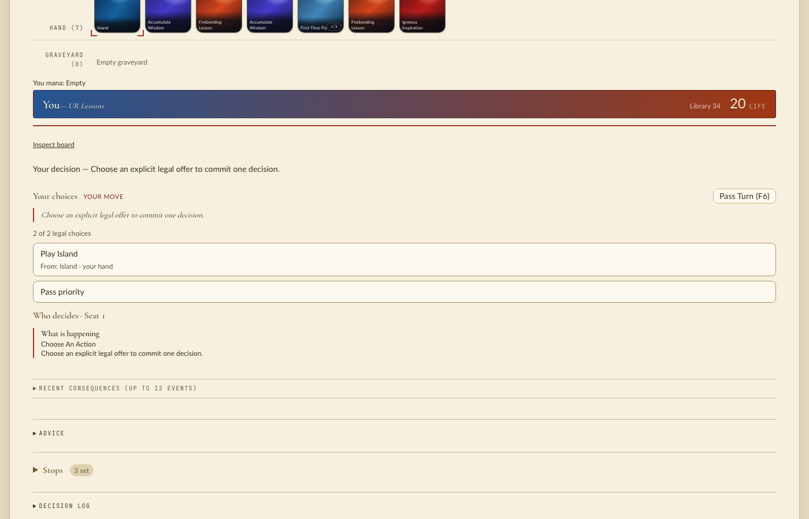
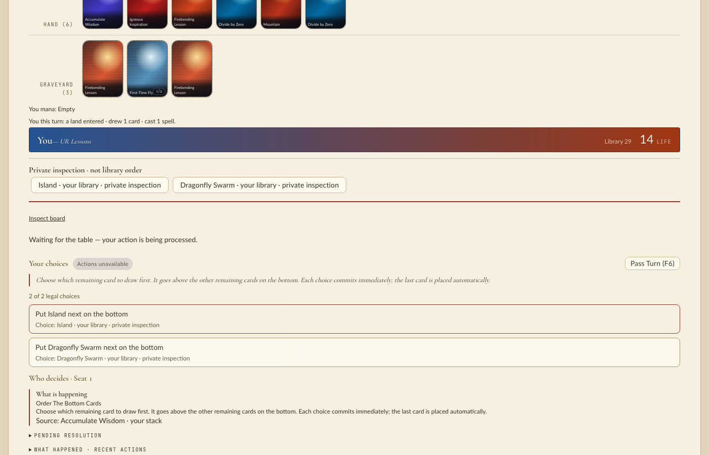
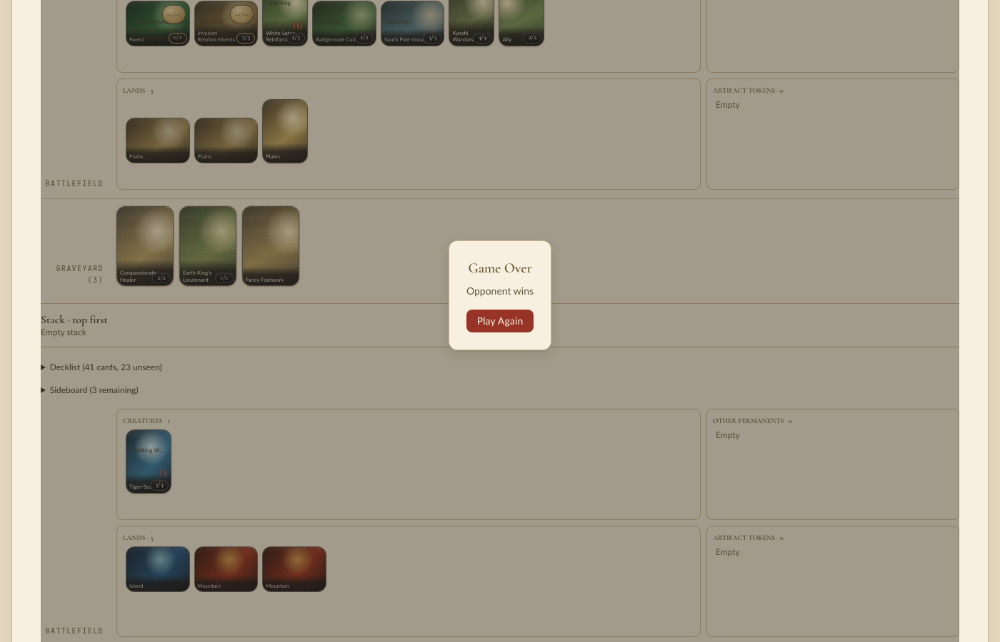
Works: no behavior change against merged main for 568 seeded games, now including the merged mana-spending code and the TLE bonus tokens; two Academy games to Game Over.
Fixed: nothing; nothing broke.
Not reached: Rust debug suite, Engine Budget and CI on this head (gate owns them); a permanent-spell copy in Academy; emblems.
Still wrong, worst first: (1) main's “source cannot pay tap cost” agent error in one TLA pool game (present before this change); (2) the earlier Academy table stall did not recur, its cause still unknown.
Before engine: main 6ce618b8a (includes both payment optimizations), release cp313 built in a detached worktree at /tmp/mtg320-before. After engine: this branch, release cp313 installed atomically into managym/; each run printed managym.__file__ to confirm which tree loaded. Host load averages were 60–280 throughout (other work on the machine).
One script (/tmp/mtg320-qa/compare.py), random legal actions from random.Random(seed); per decision a hash of both seats' toJSON() plus state_digest(), and each game's result or error class. Games: five authored setups (every deck against the next, 6 seeds: 108), 30 constructed Fire Lord Azula mirrors (spell copies, permanent-spell copies), and TLA pool corpus human builds (pool i against i+1).
First run (120 pools): DIFFERENT. All 138 authored and Azula games matched; 33 of 120 pool games diverged. The first, pool bc6d778f vs 5b856027, split at decision 236, right after casting Kyoshi Battle Fan (“When this Equipment enters, create a 1/1 white Ally creature token, then attach this Equipment to it”). On main the Fan was attached to the new token (2/1); on the branch it stayed unattached and the token was 1/1.
Cause: Effect::SelectCards resolution (managym/src/flow/resolution.rs) now kept only ObjectKind::Card candidates for every selector, so from: ObjectSelector::CreatedThisWay had no candidate for the token. The existing directed tests tla::kyoshi_battle_fan_attaches_to_its_ally_token_then_equips_at_sorcery_speed and tla::doubled_battle_fan_tokens_offer_either_attachment_without_an_implicit_choice fail without the fix; they never ran in CI on this head because the Rust job failed to compile the payment fixture.
After the fix, 400 pools: IDENTICAL. 538 games, 118,781 decisions per engine, cmp equal; 534 finished, 4 ended in PyAgentError on both engines with matching result lines.
./scripts/play --port 18771 --frontend-port 18772; ACADEMY_PLAY_READY named the rebuilt cp313 module in this checkout. Headless Chromium (Playwright from academy/ui): first visit, New Game (UR Lessons vs GW Allies, Search-64 villain), random clicks on action-panel offers only, Play Again, second game. Both games reached the Game Over dialog (37 and 20 choices) with no page or console errors, at load average ~278. An earlier pair on the pre-fix build also finished. No “Waiting for the table” stall this time.
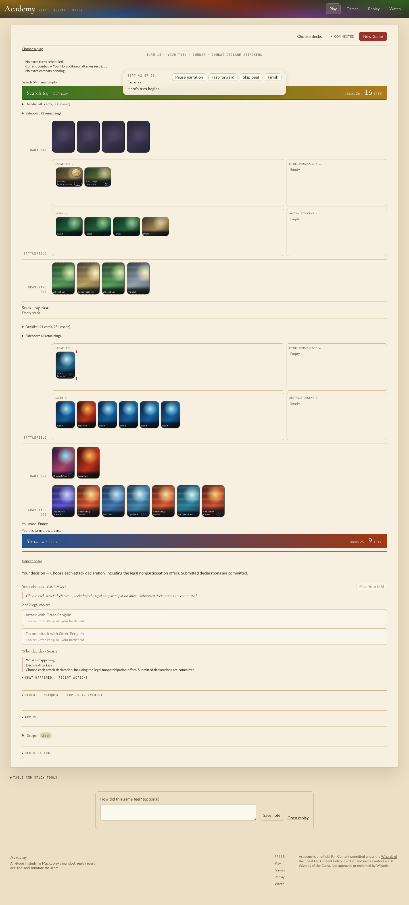
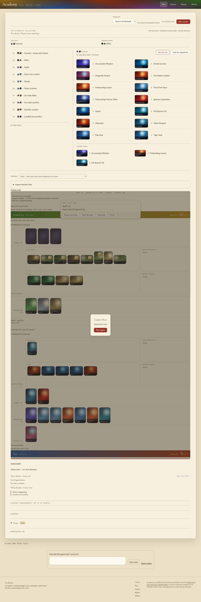
Effect::SelectCards narrows to cards only when the selector reads cards (Zone, TargetPlayersZone, CardsThisWay); other selectors (CreatedThisWay) match any object, as on main. The intended exclusion of transient tokens from library searches is kept.
Works: no behavior change against main for 538 seeded games including TLA pool builds (waterbend, Treasure, Battle Fan) and Azula copies; Academy games play to Game Over.
Debug Rust suite: cargo nextest run --workspace --lib --tests --profile ci --test-threads 2 (run c3692327): 1195 of 1199 passed, 2 skipped, 4 vector_env tests timed out at 300 s while load was ~280. Rerun alone at load ~55 they pass (shards_preserve_global_seeds_through_autoreset_and_restore 11.9 s, uniform_roots_cover_all_pairs_and_seats_with_exact_setups 21.6 s, the other two 2–3 s); main 6ce618b8a also timed out on uniform_roots... under the same load. Workspace Clippy (all targets/features, -D warnings), rustfmt and git diff --check pass.
Not reached: a permanent-spell copy in Academy (no matchup has Azula); a spell copy bounced to hand (no card does it); emblems (none defined).
Still wrong, worst first: (1) every other new card-only narrowing in the diff is checked only by these games and the suite, and the authored setups alone would have missed the Battle Fan regression; (2) CI has not yet run the Rust suite or Engine Budget on this head; the fix is uncommitted.
The installed extension (13:37) was older than the last commits (helper renames, sorted stack comparison, merge of 4bc48211e). I rebuilt it in release (cp313) and replaced it atomically. For a "before" engine I used the MTG-298 parent 4bc48211e (later MTG-298 commits change only scratch), built in a throwaway worktree.
One script, run against each build. Five authored packs (tla-baseline-v1, ur-lessons-vs-gw-allies, elemental-world-v2, elemental-temur-v1, elemental-sacrifice-v1), 8 games each, random legal actions from a seeded RNG. At every decision it records a hash of both seats' viewer observation JSON and the engine's full state_digest().
before: 11558 lines after: 11558 lines cmp: IDENTICAL
Fire Lord Azula (the code path this change moves: spell copies and permanent-spell copies). Constructed 4-of decks with Azula, Lightning Bolt, Firebending Lesson, Combustion Technique, Fists of Flame, Spectral Sailor and lands, built with PlayerConfig(..., WORLD_SETUP). A scripted policy declares attacks and casts spells whenever it can.
150/150 finished (both builds) copies on the stack: Fists of Flame 2, Combustion Technique 4, Lightning Bolt 4, Firebending Lesson 6 Spectral Sailor token sightings on the battlefield: 15 (permanent-spell copy became a token) token or copy outside battlefield/stack at a decision: 0 before vs after, 14174 decision lines incl. state_digest: IDENTICAL
So for these games, observations and full engine state match the pre-change engine byte for byte, including the hash bytes for copies.
60/60 finished in 102 s, no errors tokens seen: Ally 5002, Clue 608, Human Soldier 364, Food 260, Treasure 102, Ran and Shaw 25 token outside battlefield/stack at a decision: Treasure in a graveyard at a Modal (mana colour) decision, 32 times; nothing else
The Treasure case is the same one the earlier pass saw, and it is correct: a mana ability resolves without priority, so SBAs haven't run yet (CR 704.3).
./scripts/play --port 18741 --frontend-port 18742. ACADEMY_PLAY_READY named the rebuilt cp313 module. In headless Chromium: first visit, New Game (UR Lessons against GW Allies with the default Search-64 villain), then clicks on action-panel offers only.
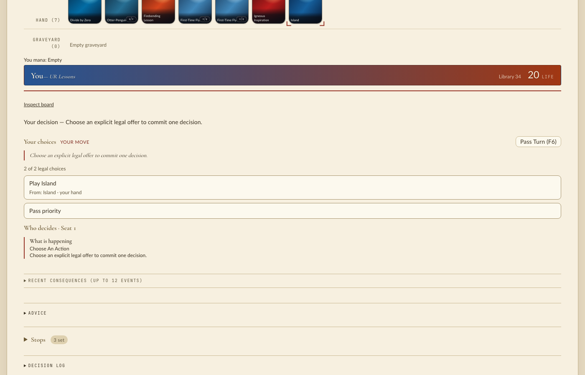
The game played 24 decisions with no page or console errors. Then it stopped at "Waiting for the table — your action is being processed", with every choice disabled:
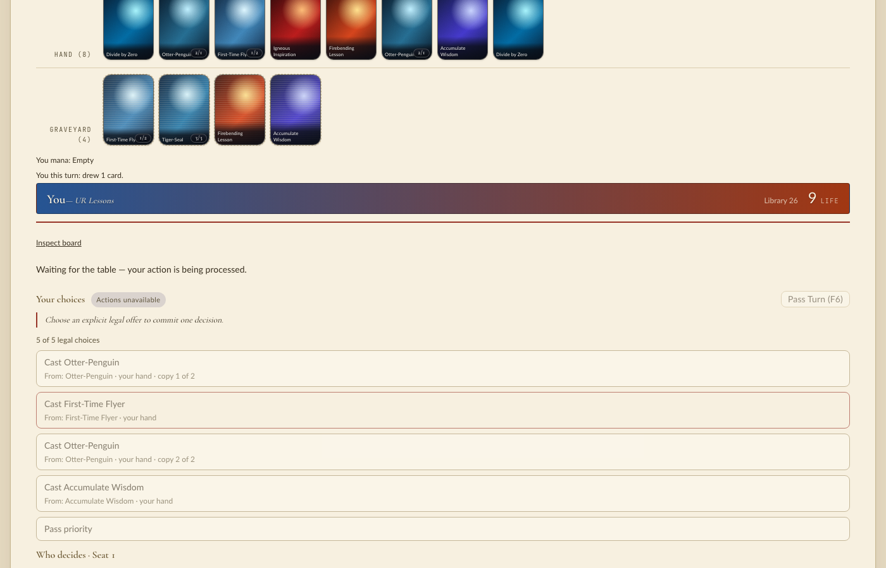
The server log had no error. A native sample showed the event loop idle in kevent and not deadlocked. A second browser's WebSocket handshake to the same server timed out, and its second command ("Play Island") got no reply. uptime reported load averages around 300, from other work on the machine (several rustc builds), not from this QA. Restarting the table with the pre-change extension, to compare, failed twice in Vite startup (ready.timeout, "transport was disconnected"). Under this load the table run says nothing about the change, either way.
The engine evidence covers what Academy reads: A shows the frames come from byte-identical observations. The change touches no Academy code. The earlier pass on 79aa9881e played four Academy games to Game Over, and saw this same stall once.
Nothing in the product. managym/README.md had an uncommitted fix (card_matches_predicate → object_matches_predicate); I confirmed object_matches_predicate exists at managym/src/flow/statics.rs:425 and left the edit in place. The QA skill now describes the before/after byte comparison and the load check before running the table.
Build under test: branch head 79aa9881e. Release extension rebuilt from it and installed into
managym/_managym.cpython-313-darwin.so (the previous build predated the last commits).
12 games each of tla-baseline-v1, ur-lessons-vs-gw-allies, elemental-world-v2,
elemental-temur-v1 and elemental-sacrifice-v1, random legal actions, both seats' observations read at every decision.
60/60 games finished; 436 distinct tokens seen (Ally, Clue, Human Soldier, Food, Treasure, Ran and Shaw) token outside battlefield/stack at a decision: 90 sightings, all Treasure in a graveyard
Each Treasure case is a Modal decision (choose the mana color) right after sacrificing it for mana; the next
decision is a priority decision and the Treasure is gone. Mana abilities don't wait for priority and SBAs only run before
priority (CR 704.3), so this is correct. The SBA logic is the same as before for tokens (the branch only adds the spell-copy arm).
Constructed decks via PlayerConfig(..., world=WORLD_SETUP): 4 Fire Lord Azula, Lightning Bolt, Firebending Lesson,
Combustion Technique, Fists of Flame, Spectral Sailor (flash), UBR lands. Scripted policy attacks, holds Sailors for combat, casts spells.
150/150 games finished copies seen on the stack: Combustion Technique 8, Firebending Lesson 9, Fists of Flame 13, Lightning Bolt 9 Spectral Sailor tokens on the battlefield: 47 sightings (permanent-spell copy became a token, CR 111.12) token or copy outside battlefield/stack at a decision: 0 more non-token copies of a card than the deck holds: 0
./scripts/play --port 18731 --frontend-port 18732; ACADEMY_PLAY_READY named the rebuilt cp313 module.
Headless Chromium: first visit, New Game, then clicked action-panel offers until the game ended (four games).


Games ran to the "Game Over" dialog with no page or console errors. The GW opponent's Ally token renders on the battlefield (attacking 3/3) and graveyards hold only cards:


Nothing in the product needed fixing. Added the engine-scenario route to .lf/skills/qa.md.
is_token
(TriggerCondition::PutIntoGraveyard and Card::become_copy_of) onto the kind.